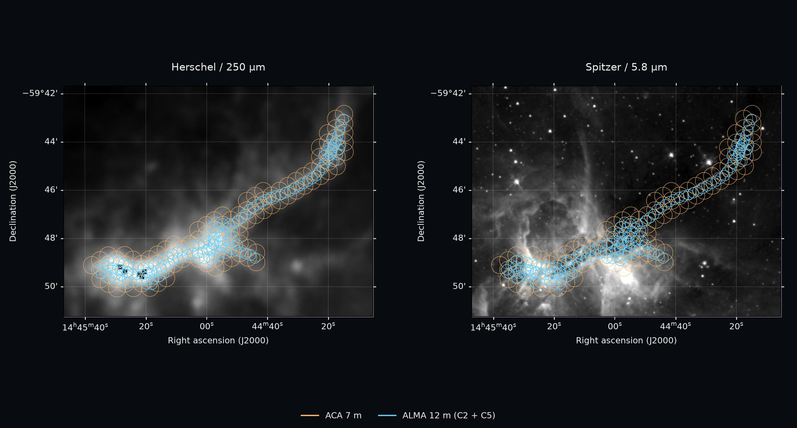
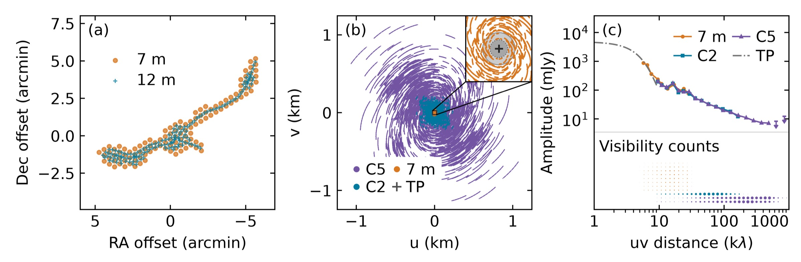
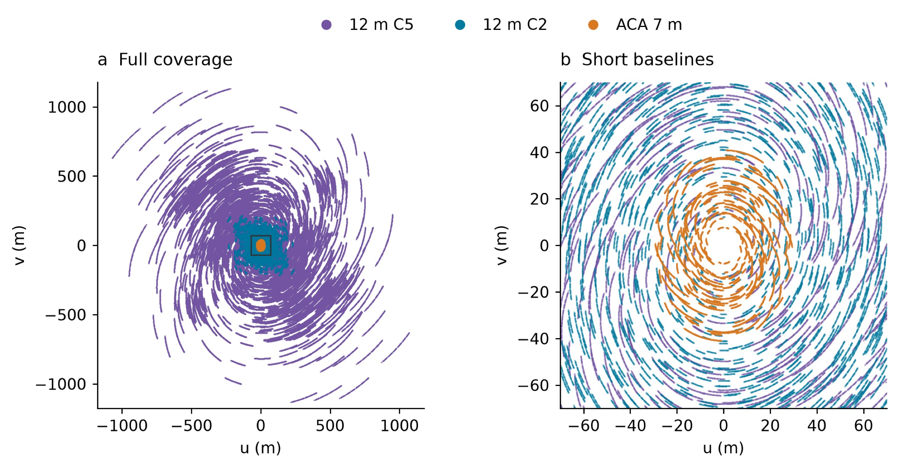
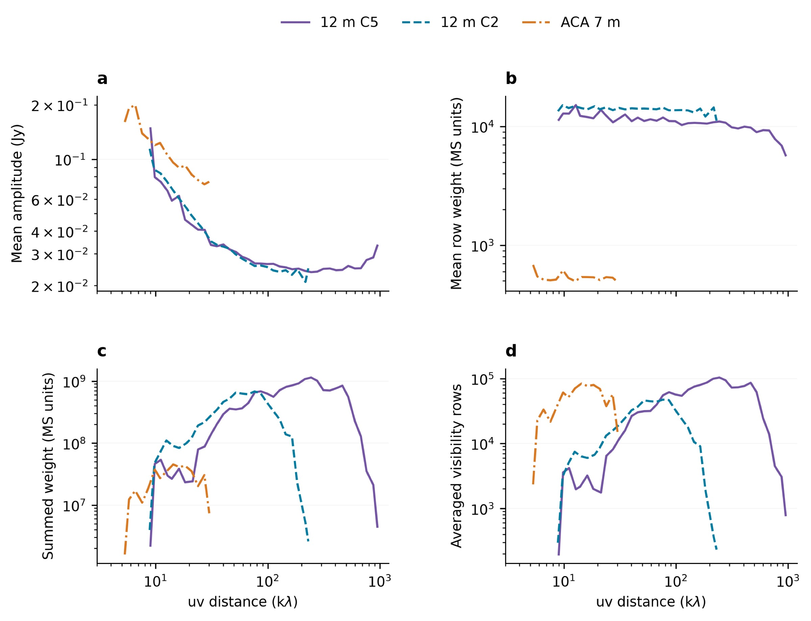
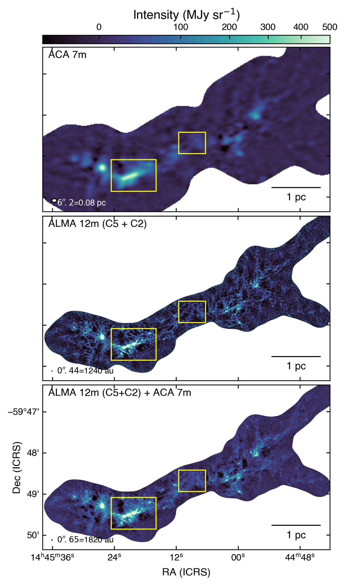
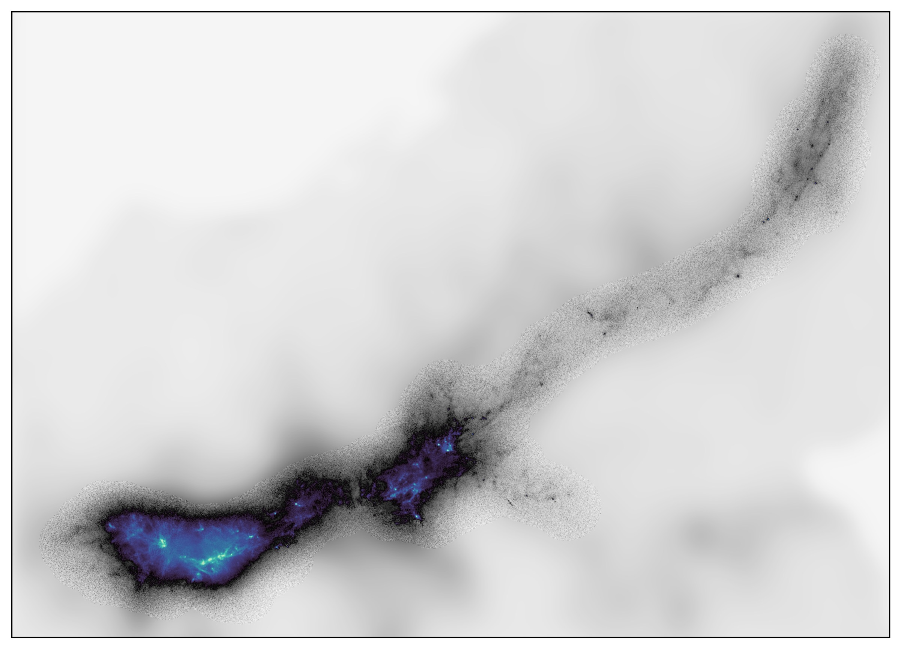

ALMA & ACA
The project combines 7 m and 12 m continuum observations to examine extended structure and dense cores. Total-power data support the spectral-line combination work.
Complementary telescopes connect the extended reservoir to the compact structures within it.
The project combines 7 m and 12 m continuum observations to examine extended structure and dense cores. Total-power data support the spectral-line combination work.
Complementary observations support temperature and column-density mapping. VVV and GLIMPSE photometric data distinguish different evolutionary stages of the LANCET filament.
Our spectral setup targets C¹⁸O, CO, H₂CO, ¹³CS, and N₂D⁺. Line imaging and combination are presented separately from the continuum below.
Inspect delivered inputs, apply the declared primary-beam response masks, and convert image units using the recorded beam areas.
Compare array products, examine spatial-scale recovery, and match angular resolution when comparing measurements.
Construct temperature and column-density products, characterize dense structures, and connect their properties to the surrounding gas.

Our largely completed continuum workflow combines complementary array configurations and a model of extended emission. Each step below exposes the evidence behind the resulting image.
ACA 7 m and ALMA 12 m pointing centres, uv coverage, and visibility-amplitude profiles. The TP reference represents the reconstructed continuum model.

The uv coverage shows how the 7 m, 12 m C2, and 12 m C5 configurations sample complementary spatial frequencies.

Visibility-amplitude profiles provide a check on the emission sampled by the different configurations.

Comparison of the 7 m, 12 m, and combined interferometric images: extended structure and compact cores are recovered together.

J-comb combines the primary-beam-corrected interferometric image with the 1.3 mm continuum model constructed from dust and free-free SED fitting. This restores diffuse emission and reduces negative bowls while retaining compact structures.

All six targeted narrow spectral windows documented in Paper I are listed below. Frequencies are observing-window centres, not molecular rest frequencies. Coverage does not imply that every transition is detected or has a completed combined cube.
| Molecule | Transition | Window centre (GHz) |
|---|---|---|
| H₂CO | 3₀₃–2₀₂ | 218.248 |
| H₂CO | 3₂₂–2₂₁ | 218.484 |
| C¹⁸O | 2–1 | 219.587 |
| CO | 2–1 | 230.565 |
| ¹³CS | 5–4 | 231.249 |
| N₂D⁺ | 3–2 | 231.350 |
Two wide windows centred at 216.732 and 230.940 GHz provide additional spectral coverage and continuum bandwidth.
Line-free channels are fitted in visibility space before cube imaging.
Current C¹⁸O work tests joint 12 m and 7 m imaging. H₂CO 3₀₃–2₀₂ continuum-subtracted measurement sets are also available.
The C¹⁸O pilot combines the interferometric cube with LSRK total-power data. Its processing status is distinct from the completed continuum products.
The Python package, runnable scripts, and per-task documentation live together in the repository. Data-dependent tasks require their declared local inputs; observational data are not bundled with the code.
python -m pip install -e ".[dev]"
python scripts/prepare_continuum_images.py --stage inspect